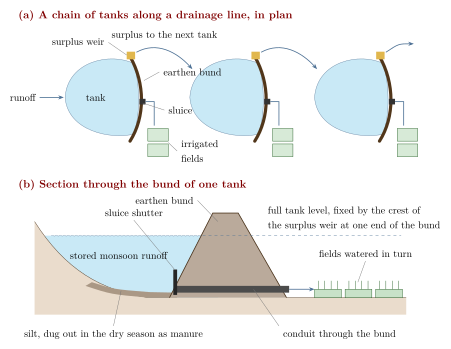
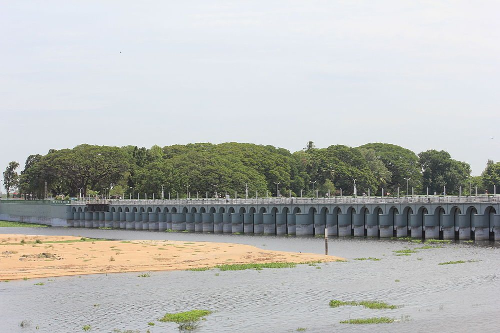
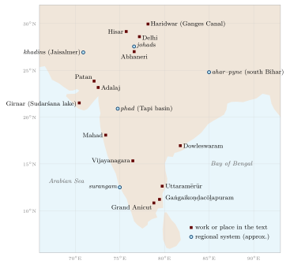
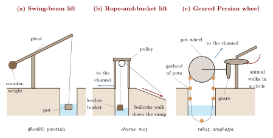

Chapter 8: Water: Tanks, Canals, Wells and Communities¶
Indian agriculture has always had to manage a seasonal abundance of water and a long seasonal scarcity. Over most of the subcontinent the bulk of the year’s rain falls in the few months of the south-west monsoon, and much of it runs off quickly; the rest of the year is dry, and the monsoon itself is uncertain in its timing and amount (see Volume 19, Vāṇijya and Samudra, on the monsoon, and Chapter 3 on rain forecasting). Almost every Indian irrigation technique is a way of holding monsoon water back—in a tank, behind a weir, in the soil, or underground—or of lifting stored water from a well or river when it is needed. This chapter surveys those techniques and the institutions that sustained them, from the earliest textual references to the colonial canals and the recent decline and partial revival of community systems. The emphasis is on what can be documented in texts, inscriptions, surviving works and field studies.
8.1 Water in Early Texts¶
8.1.1 Before and in the Veda¶
The Harappan cities were careful managers of water: Mohenjo-daro had a very large number of brick-lined wells and covered drains, and Dholavira in Kachchh had large stone-cut reservoirs for storing seasonal runoff (Kenoyer 1998; Possehl 2002). Whether Harappan farmers practised canal irrigation on any scale is debated; much of their agriculture probably relied on rainfall and on the flooding of rivers (Chapter 2).
The Ṛgveda knows both natural and artificial water. A hymn to the Waters speaks of waters that are heavenly or that flow, khanitrimā uta vā yāḥ svayaṃjāḥ, “those that are dug and those that arise of themselves” (RV 7.49.2; (Jamison and Brereton 2014)). The well (avata) appears in the same collection: one late hymn (RV 10.101), addressed to the priests as if they were farmers, uses the image of a well with a strap and bucket, drawing water that does not run dry, alongside the yoking of ploughs. The word kulyā, a channel or ditch, also occurs in Vedic texts. These references show that dug channels and wells were familiar, but they do not describe irrigation systems, and nothing in the Vedic corpus supports claims of large-scale hydraulic works.
8.1.2 Buddhist and Jain traditions¶
Early Buddhist and Jain texts are set in a landscape of rice fields divided by bunds and fed by channels. A well-known story in the later Buddhist commentarial tradition tells how the Śākyas and the Koliyas, neighbouring peoples on either side of the river Rohiṇī, quarrelled over the waters of a weir across the river during a drought, and how the Buddha made peace between them. Whatever its historicity, the story assumes that dividing river water between communities was a familiar cause of conflict.
8.1.3 The Arthaśāstra¶
The Arthaśāstra (composite, c. 50 BCE–300 CE) gives the earliest sustained treatment of irrigation as a matter for the state; for the text as a whole, see Volume 18, Rājanīti and Dharmaśāstra. Its key term is setu, which covers dams, embankments and the reservoirs they create. In the chapter on settling the countryside (Book 2, chapter 1) the king is told to have irrigation works built, either with water available on the spot (sahodaka) or with water brought from elsewhere (āhāryodaka), and to help others who build them by providing land, roads, timber and implements (Kangle 1965; Olivelle 2013). In Book 7, when weighing one strategic advantage against another, the text judges a work with its own water source better than one depending on water brought from elsewhere, and among the former, the one that irrigates the larger crop.
Several other passages concern water. The chapter on the superintendent of agriculture (2.24) fixes a water rate graded by the way the water reaches the field (Section 2.11.1), and the rain gauge and regional rainfall norms are discussed in Section 3.5. In Book 3, the rules on property and damage grant remissions of tax for a number of years to those who construct new irrigation works or restore abandoned ones, the remission being longer for new works; they treat privately built works as property; and they impose fines on those who breach embankments or obstruct another’s water. Whether these rules describe actual Mauryan administration or the ideal of later theorists is uncertain, but they show that by the early centuries CE, Sanskrit political thought treated irrigation works as both a royal responsibility and a form of property.
8.1.4 Merit and patronage¶
From the Dharmaśāstra and Purāṇic literature onward, the building of wells, tanks, stepwells and gardens is classed as pūrta, a work of public merit that, with sacrificial and charitable works (iṣṭa), earns religious reward. Thousands of inscriptions across India record the digging or repair of a tank or well by a king, queen, merchant, temple, village assembly or individual, often with a grant of land or revenue for its upkeep. This ideology of merit was one important reason why so much hydraulic infrastructure was built by patrons outside the central state; it does not mean that the resulting water was shared equally (Section 8.5).
8.2 The Sudarśana Lake at Girnar¶
The best-documented early irrigation work in India is the Sudarśana lake at Girnar, near Junagadh in Saurashtra, known from inscriptions on the same boulder that carries a set of Aśoka’s major rock edicts. The Sanskrit inscription of the Western Kṣatrapa ruler Rudradāman, dated to year 72 of the Śaka era (150 CE), records that the lake had been constructed under Candragupta Maurya by his provincial governor, the vaiśya Puṣyagupta, and that under Aśoka the Yavana king Tuṣāspha had furnished it with conduits. A great storm had then burst the dam and emptied the lake. Rudradāman, the inscription says, had it rebuilt, stronger than before, from his own treasury and without oppressing the people with taxes, forced labour or levies, through his minister Suviśākha, a Pahlava who governed the province (Singh 2008). The lake was breached again three centuries later; an inscription of the Gupta emperor Skandagupta on the same rock records its repair in the mid-fifth century by Cakrapālita, son of the provincial governor.
These records are valuable precisely because they are not idealised prescriptions. They show a single reservoir maintained for more than seven centuries under three successive powers—Maurya, Kṣatrapa and Gupta—and the provincial officials who served them, with all the risks of breaching and neglect that such works faced. They also show irrigation as royal propaganda: Rudradāman’s boast of having avoided forced labour (viṣṭi) is a reminder that such labour was the normal way in which large works were built.
A second early record comes from Odisha. The Hāthīgumphā inscription of the Kaliṅga king Khāravela (1st c. BCE) says that he brought into his capital a canal first opened by a “Nanda king” long before; the interval is read differently by different scholars, so the age of the canal is uncertain.
8.3 Tanks of Peninsular India¶
8.3.1 What a tank is¶
Across the drier parts of the peninsula, from Tamil Nadu through Karnataka, Andhra Pradesh and Telangana into the Deccan, the characteristic irrigation work is the tank: Tamil ēri, Kannada kere, Telugu cheruvu. A tank is made by throwing an earthen embankment across a shallow valley or the line of a seasonal stream. Monsoon runoff collects behind the bund; one or more sluices let water out to the fields below as the crop requires; and a surplus weir carries off excess water in heavy rain so that the bund is not overtopped. In many areas tanks are arranged in chains or cascades along a drainage line, so that the surplus of one feeds the next (Figure 8.1). Tanks also serve for drinking water, bathing, washing, cattle, fish and the recharge of nearby wells, and the silt deposited on their beds is a valued manure (Chapter 7).

8.3.2 Tanks in inscriptions¶
The epigraphic record of tanks in south India is enormous. Pallava, Pāṇḍya, Cōḻa, Cālukya, Hoysala, Kākatīya and Vijayanagara inscriptions record the construction and repair of tanks, the grant of land whose income was to pay for annual desilting and bund repair, and disputes over water. In Karnataka and Andhra, grants known as daśabandha (Telugu dasavanda, “one-tenth”) rewarded those who built or maintained tanks with a share of the land or produce they irrigated. Large tanks associated with particular rulers include the great reservoir at Gaṅgaikoṇḍacōḻapuram, the capital built by the Cōḻa king Rājendra I in the eleventh century. Such works were important, but most tanks were small, local and anonymous.
8.3.3 The Uttaramērūr inscriptions¶
The most detailed evidence for the local management of tanks comes from two inscriptions of the Cōḻa king Parāntaka I, of 919 and 921 CE, at Uttaramērūr near Kanchipuram. They set out the rules by which the sabhā, the assembly of this brahmadeya (a village granted to brahmins), was to choose its executive committees (vāriyam). Candidates were nominated by ward and chosen by lot, slips bearing their names being drawn from a pot (kuḍavōlai). Among the committees were an annual committee, a garden committee and a tank committee (ēri-vāriyam) responsible for the village’s tanks (Singh 2008).
The inscriptions are justly famous as evidence of elaborate local self-government, but they are sometimes described too generously as a “village democracy”. Eligibility was limited to men of a certain age who owned taxable land and a house on their own site and had Vedic learning; the assembly was that of brahmin landholders, and the cultivators and labourers who worked the land had no voice in it. The tank committee managed water on behalf of landholders.
8.3.4 Cōḻa and Vijayanagara landscapes¶
Under the Cōḻas (9th–13th c.) the Kāvēri delta was irrigated mainly by channels taking off from the river and its branches, while the drier uplands around it depended on tanks. Inscriptions show temples acting as major investors in, and managers of, irrigation, receiving endowments of land and lending money for tank works.
Kathleen Morrison’s archaeological study of the region around Vijayanagara, the capital of the empire of that name (14th–16th c.), shows how varied irrigation could be within a single landscape (Morrison 1995). Close to the Tungabhadrā river, weirs (anicuts) diverted water into long channels that fed irrigated fields; away from the river, reservoirs behind embankments held runoff; and on the uplands, dry farming and small run-off fields persisted. Morrison argues that agricultural intensification around the city was achieved through this mix of strategies, each with different costs and risks, rather than through a single type of “hydraulic” system directed by the state.
8.4 The Grand Anicut on the Kāvēri¶
In south India a weir across a river that diverts water into irrigation channels is called an anicut (from Tamil aṇaikkaṭṭu). The most celebrated is the Grand Anicut, Tamil Kallaṇai (“stone dam”), near Tiruchirappalli at the head of the Kāvēri delta, which regulates how the river’s water is divided between the Kāvēri proper and its northern branch, the Kollidam (Coleroon). Tradition attributes the original work to the early Cōḻa king Karikāla (early centuries CE), and later Cōḻa-period traditions credit him with embanking the Kāvēri. No contemporary inscription confirms the attribution, and the date of the earliest structure is not known; but an old masonry weir certainly existed at the site before the colonial period (Figure 8.2).


The structure visible today is largely the work of the nineteenth century. In the 1830s and 1840s the Madras engineer Arthur Cotton studied the old weir, built a new regulating work (the Upper Anicut) across the Kollidam upstream, and rebuilt and raised the Grand Anicut itself, with further modifications by later engineers. Cotton is said to have learned from the old anicut how to found a masonry weir on a sandy river bed, and he went on to build the great anicut across the Godāvarī at Dowleswaram (begun 1847), which transformed irrigation in the Godāvarī delta; a similar work on the Kṛṣṇā followed in the 1850s. The Grand Anicut thus belongs to two histories at once: a long Tamil tradition of river diversion, and the colonial irrigation engineering that built on it.
8.5 Tanks, Caste and Community¶
Tanks are often presented as the model of community water management, and in an important sense they were. Their upkeep depended on collective labour by the villagers who used them, known in Tamil as kuṭimarāmattu (roughly, “maintenance by the cultivators”): desilting the bed, repairing the bund, clearing the channels. Water was distributed through village functionaries such as the Tamil nīrkaṭṭi, who opened sluices and turned water from field to field in an agreed order, often paid in grain at harvest. Rules for sharing in scarcity, closing the sluices, and timing the crop were made and enforced locally.
But “community” did not mean equality. David Mosse’s study of tank systems in the Ramanathapuram and Sivaganga region of Tamil Nadu shows that tanks were embedded in political systems of kingship, temple honour and caste rank (Mosse 2003). Rights to water, the order in which fields received it, and the duty to perform the labour of maintenance were tied to caste status: dominant landholding castes controlled tanks and took the first and best water, while the actual digging, desilting and watering were frequently done by Dalit labourers and by low-ranked service castes, including the water-turners themselves. Mosse also shows that the colonial state, by treating tanks as revenue-producing property and taking over their maintenance, weakened the older political arrangements that had sustained them, without creating effective new ones.
Exclusion from water was also enforced in everyday life. Across much of India, Dalits were barred from using village wells and tanks used by the upper castes, and separate wells were the norm. In 1927 B. R. Ambedkar led a large assembly of Dalits to drink from the public Chavdar tank at Mahad in Maharashtra, a landmark of the movement against untouchability. Any account of traditional water management that celebrates community must also record whom the community excluded.
Water institutions
Most Indian irrigation systems were neither purely state works nor purely “community” works. Kings and temples financed large tanks and channels; village assemblies and dominant landholders managed them; customary officials—the nīrkaṭṭi in Tamil Nadu, the kohli of the Kangra kuhls, the watermen of the Maharashtra phads—regulated day-to-day distribution; and the heavy labour fell largely on lower castes. These institutions were often durable and effective, and also hierarchical.
8.6 Kashmir: Suyya’s Works¶
One of the few accounts of a named hydraulic engineer in pre-modern India comes from Kalhaṇa’s Rājataraṅgiṇī, the Sanskrit chronicle of the kings of Kashmir completed in 1148–49. In its fifth book Kalhaṇa describes the works of Suyya, a man of humble origins who served King Avantivarman (r. c. 855–883). According to Kalhaṇa, the valley suffered from floods because the Vitastā (Jhelum) was choked by rocks where it leaves the valley, and Suyya had the bed cleared—famously, by throwing money into the river so that villagers would dig out the obstruction while searching for coins. He is said to have built stone embankments, moved the confluence of the Vitastā and the Sindhu, reclaimed land from the marshes, protected villages with circular dykes, and fixed the allotment of irrigation water to villages; Kalhaṇa adds that the price of rice fell greatly as a result (Stein 1900). The town of Sopore (Suyyapura) is named after him. The account is a court chronicle written three centuries after the events, and its details cannot be checked independently, but it is a rare literary description of drainage and river training in medieval India.
8.7 Stepwells¶
The stepwell—Sanskrit vāpī, Gujarati vāv, Hindi and Rajasthani bāolī or bāvaḍī—is a well reached by a long flight of steps descending through a series of landings and pavilions to the water, so that people can reach the water whatever its level. Stepwells are concentrated in Gujarat and Rajasthan, where groundwater lies deep and fluctuates greatly with the seasons. The form is attested in the later first millennium CE (the Chand Baori at Abhaneri in Rajasthan is commonly dated to the eighth or ninth century), and the great Gujarati examples date from the eleventh to the sixteenth century (Jain-Neubauer 1981).
The Rani-ki-Vav at Patan, built in the later eleventh century and traditionally associated with Queen Udayamatī in memory of the Caulukya king Bhīma I, is the most elaborate, with hundreds of sculptures on its walls; it was inscribed as a World Heritage Site in 2014. The stepwell at Adalaj near Ahmedabad bears an inscription of 1499 recording its construction by a queen, Rūḍādevī, wife of a local Vāghelā chief. Many other stepwells were built under the Gujarat Sultanate and the Mughals, and the type was shared across religious communities.
Stepwells were primarily for drinking water, bathing and rest rather than irrigation, although some fed gardens. They were also social spaces, especially for the women who drew water, and cool places of retreat in the hot season. Their elaborate architecture made them works of conspicuous merit for their patrons, among whom queens and merchants are prominent. The stepped tank at Mohenjo-daro known as the “Great Bath” is a different kind of structure, and no stepwell of the Harappan period is known.
8.8 Regional Systems¶
India’s diversity of terrain and rainfall produced a correspondingly diverse set of local irrigation and water-harvesting systems. Many were documented systematically for the first time in the survey Dying Wisdom, edited by Anil Agarwal and Sunita Narain (Agarwal and Narain 1997), which did much to draw attention to them; some are summarised in Table 8.1, and Figure 8.3 locates them and the other works named in this chapter. Community water harvesting in tribal regions is treated more fully in Volume 23, Jana–Jāti.

| System | Region | Principle |
|---|---|---|
| Ēri, kere, cheruvu | Tamil Nadu, Karnataka, Andhra Pradesh, Telangana | Tanks behind earthen bunds, often in cascades; sluices release water to fields |
| Ahar–pyne | South Bihar | Channels (pyne) lead river and runoff water to embanked reservoirs (ahar) that irrigate rice |
| Phad | Tapi basin, north-western Maharashtra | Weirs (bandhara) divert river water to channels serving blocks of land (phad) planted to a common crop |
| Kuhl | Kangra and other valleys of Himachal Pradesh | Gravity channels from mountain streams, maintained by irrigators under a watermaster (kohli) |
| Zabo | Phek district, Nagaland | Protected forest, ponds, cattle yards and rice terraces linked by runoff channels |
| Bamboo drip | Khasi and Jaintia hills, Meghalaya | Spring water carried and divided through bamboo pipes, notably to betel-leaf and black pepper gardens |
| Kuṇḍ or kuṇḍī | Thar desert, western Rajasthan | Covered cistern fed by a prepared catchment, mainly for drinking water |
| Johad | Eastern Rajasthan | Earthen embankment that impounds runoff and recharges wells |
| Khadin | Jaisalmer region, Rajasthan | Embankment across a slope; ponded water and silt make a cultivable bed for a winter crop |
| Surangam | Kasaragod (Kerala) and Dakshina Kannada (Karnataka) | Horizontal tunnels dug into laterite hillsides to draw out groundwater |
8.8.1 Ahar–pyne of south Bihar¶
The plains of south Bihar slope northward towards the Ganga, and their rivers run full in the monsoon and dry soon after. The ahar–pyne system exploits this. Pynes are channels that take water from the rivers in flood, or collect runoff, and lead it to ahars, reservoirs embanked on three sides with the fourth open to the slope. Water stored in the ahars, and the moisture in their beds, carries the rice crop through the end of the monsoon. Maintenance depended on landlord investment and on collective labour; the decline of both after the abolition of zamindari in the 1950s is widely blamed for the system’s deterioration (Agarwal and Narain 1997).
8.8.2 Phad of Maharashtra¶
In the valleys of the Panjhra and neighbouring rivers of the Tapi basin, farmers built stone weirs (bandhara) to divert river water into main canals and smaller distributaries. The land commanded by each system was divided into blocks (phad), each of which grew a single crop in a given season, such as sugarcane or a grain crop, so that water could be delivered efficiently to the block as a whole. Water distribution and maintenance were organised by the irrigators through appointed watermen.
8.8.3 Kuhls of Kangra¶
In the Kangra valley of Himachal Pradesh, gravity-flow channels called kuhls divert water from Himalayan streams to terraced rice fields. Mark Baker’s study shows that each kuhl is managed by the households it serves, under a watermaster (kohli) who organises the annual repair of headworks after the monsoon and the rotation of water between villages and fields; customary rules were written down by colonial settlement officers in the late nineteenth century and still carry weight (Baker 2005). Baker also traces how these institutions have adapted, or failed to adapt, to the spread of off-farm employment and state intervention.
8.8.4 The North-East¶
In the zabo (“impounding water”) system of the Chakhesang Nagas of Kikruma and neighbouring villages, rainwater falling on protected forest above the fields is led into ponds, passes through cattle yards where it picks up manure, and is then channelled onto rice terraces, with fish sometimes reared in the fields. In the Khasi and Jaintia hills of Meghalaya, water from springs and streams is carried in bamboo pipes and progressively divided through smaller pipes and channels until it arrives, at a much reduced flow, at the base of individual plants, chiefly in betel-leaf and black pepper gardens. The system is often called “bamboo drip irrigation”; it shares the principle of delivering small quantities of water to each plant with modern drip irrigation, though it was developed independently (Agarwal and Narain 1997).
8.8.5 Rajasthan: kuṇḍs, johads and khadins¶
The Thar and its margins have very low and erratic rainfall, and water harvesting there aims first at drinking water. A kuṇḍ or kuṇḍī is an underground cistern, usually lined and covered with a dome, fed by a carefully prepared and often plastered catchment sloping towards it. In eastern Rajasthan, johads are crescent-shaped earthen embankments that hold monsoon runoff; their main benefit is often the recharge of downstream wells. From the 1980s the voluntary organisation Tarun Bharat Sangh, led by Rajendra Singh, revived the building of johads in Alwar district, an effort that became a model for water-harvesting campaigns elsewhere.
The khadin, associated by tradition with the Paliwal Brahmins of the Jaisalmer region, is a long earthen embankment built across the lower slope of a rocky catchment. Monsoon runoff collects behind it, depositing fine silt; when the water has soaked in or been drained, the moist bed is sown with a winter crop such as wheat or gram. The khadin is as much a soil-making device as a water-harvesting one (Chapter 7).
8.8.6 Surangam of the laterite coast¶
In Kasaragod district of northern Kerala and the adjoining Dakshina Kannada district of Karnataka, farmers dig horizontal tunnels, called surangam or suranga, into laterite hillsides until they reach water-bearing strata; the water then flows out by gravity into a pit or tank, and is used for drinking and for areca nut and coconut gardens. The technique resembles the qanāt of Iran in principle, though a surangam is usually a single tunnel without the vertical shafts of a qanāt. How old the tradition is, and whether it is connected to West Asian practice, is not known; many existing tunnels are relatively recent.
8.9 Lifting Water¶
Where water lay below the level of the field—in a well, a river or a low tank—it had to be lifted. Irfan Habib’s survey of medieval Indian technology distinguishes several devices and traces their history (Habib 2008); the three main types are shown in Figure 8.4.
- The swing-beam lever.
- The simplest device, a pivoted pole with a bucket at one end and a counterweight at the other (the shaduf of Egypt), is known in north India as ḍheṅklī or ḍhekulī, in Anglo-Indian usage in the south as the picottah, and by many other local names. Worked by one or two people, it lifts water a short height from shallow wells, tanks or streams.
- The rope-and-bucket lift.
- In western and northern India, a large leather bucket (charas in north India, mhoṭ or moṭ in Marathi) was drawn up from a deep well on a rope passing over a pulley by a pair of bullocks walking down an inclined ramp, then emptied into a channel. It could lift water from considerable depths but required continuous work by two men and two animals.
- The water-wheel.
- Sanskrit texts from the early centuries CE mention the araghaṭṭa and the ghaṭīyantra, “pot-machine”. In Habib’s reconstruction these were wheels carrying pots, either fixed to the rim or tied to a chain or garland of rope, turned directly by human or animal effort. The fully developed “Persian wheel” (Hindi rahaṭ), in which animals walking in a circle drive the pot-garland through right-angled gearing, spread in north India in the Sultanate period.
The emperor Bābur, writing in the 1520s, described the two methods he found in Hindustan: a wheel with a rope of pots, turned by an animal through a gear, in the Lahore and Dipalpur region; and the bullock-drawn bucket in the region of Agra and Bayana (Thackston 1996). In the Mughal period well irrigation of these kinds, rather than canals, watered most irrigated land in north India (Habib 1999).

Water-lifting was hard and continuous labour. A well with a charas could keep a team of men and bullocks occupied through the day in the dry season, and access to a well, which was expensive to dig and line, was itself a mark of a household’s standing. Wells were usually owned by landholding families, and their use, like the use of tanks, was governed by caste rules.
8.10 Finding Water: Varāhamihira’s Dakārgala¶
The fifty-fourth chapter of Varāhamihira’s Bṛhatsaṃhitā (6th c. CE; Bhat’s numbering) is the dakārgala, a manual for finding groundwater for wells (Bhat 1981). Varāhamihira begins from the idea that water runs beneath the earth in channels (śirā) like the veins of the body, and that these can be located by surface signs. Most of the chapter is a list of such signs and their meanings: a particular tree, such as a jambū or an udumbara, growing in a dry place; an anthill beside a tree; the presence of certain creatures; the colour and texture of the soil; and the kind of stones met in digging. For each sign the text states in which direction from it, and at what depth (measured in puruṣa, a unit based on a man’s height), water will be found, and sometimes whether it will be sweet or brackish. It distinguishes ordinary country from desert regions, where the indications and depths differ.
The chapter is a remarkable document of systematic observation and of the importance attached to well-digging in Varāhamihira’s world. It is also a text of its time: the rules are stated as certainties, are mixed with astrological and omen material elsewhere in the Bṛhatsaṃhitā, and have not been tested as a set. That some plants indicate shallow groundwater is a reasonable general observation; that the particular depths and directions given in the text are reliable has not been shown. The dakārgala theme was continued in later works, among them the Viśvavallabha of Cakrapāṇi Miśra (16th c., Mewar), which also deals with water-finding (Section 4.1).
8.11 Canals of the Sultanate and Mughal Periods¶
Canals drawing water from the great rivers of the north were built in the Delhi Sultanate. The most important builder was Fīrūz Shāh Tughluq (r. 1351–1388), whose canals from the Yamuna and the Sutlej carried water to his new city of Hisar and irrigated land along their courses (Raychaudhuri and Habib 1982). These canals fell into disrepair after his reign. Under Shāh Jahān, the Persian noble ʿAlī Mardān Khān re-excavated and extended the old Yamuna canal in the 1640s to bring water to the emperor’s new capital at Shāhjahānābād (Delhi); inside the Red Fort the water ran through the marble channel known as the Nahr-i Bihisht, “stream of paradise”. ʿAlī Mardān Khān is also credited with a canal bringing water from the Ravi to Lahore. These canals served cities and gardens first, but they also irrigated land along the way; their remains were later the starting point for British canal building in the Yamuna region (Habib 1999). Mughal water gardens are treated in Chapter 18.
8.12 Colonial Irrigation¶
8.12.1 From restoration to new canals¶
British irrigation in India began by restoring older works. The Western Yamuna Canal, on the line of the Tughluq and Mughal canals, was reopened in the early nineteenth century, and an Eastern Yamuna Canal followed. In the south, Arthur Cotton’s work on the Kāvēri, Godāvarī and Kṛṣṇā (Section 8.4) turned the deltas of the Madras Presidency into heavily irrigated rice country. In the north, the Ganges Canal, designed by Proby Cautley to take water from the Ganga at Haridwar into the Doab, was opened in 1854 and is often described as the largest irrigation canal of its time.
In Punjab, where large rivers cross dry plains, canal building after the 1880s created the “canal colonies”: wholly new agricultural settlements on former pasture and waste in the doabs between the Punjab rivers. The colonies made western Punjab one of the most productive wheat and cotton regions of Asia. Imran Ali has argued that they also served imperial interests—land was granted to favoured landholding castes, retired soldiers and loyal notables, while the “menial” castes who did much of the agricultural labour were largely excluded from proprietary grants, and the pastoral peoples who had used the land lost it (Ali 1988). David Gilmartin has set the canal colonies within a longer history of the Indus basin, in which the state’s control of water reshaped both the environment and the relationship between the state and the communities who used the rivers (Gilmartin 2015).
8.12.2 Costs and critics¶
Canal irrigation brought gains in output and some protection against drought, but also serious costs. Seepage from unlined canals and the lack of drainage raised water tables; land became waterlogged and, as saline groundwater rose and evaporated, encrusted with reh (Chapter 7). Waterlogging was linked by contemporaries to an increase in malaria in canal tracts. Historians of the canal regime, notably Elizabeth Whitcombe in her work on the United Provinces, have documented these effects (Whitcombe 1972; Kumar 1983). Canal water was sold at rates set to make the works pay, and the government distinguished between “productive” works expected to earn a return and “protective” works built mainly against famine. Critics then and since have argued that investment went where it would yield revenue rather than where need was greatest, and that older systems such as the tanks of the south were neglected (Davis 2001; Ludden 1999). The Indian Irrigation Commission of 1901–03 reviewed the whole field after the famines of the late 1890s.
8.12.3 Independent India¶
After independence, irrigation expanded rapidly through large multipurpose dams and canal systems, and, from the 1960s and 1970s onward, through private tubewells powered by electricity and diesel. Groundwater pumped by individual farmers has since become the main source of irrigation in much of the country, a shift whose consequences for aquifers are discussed in Chapter 20.
8.13 Decline and Revival of Tanks¶
Through the twentieth century, many tanks and other community systems decayed. The reasons were several. Colonial and post-colonial states took over formal responsibility for larger tanks but often did not maintain them; the authority of the local elites who had organised collective labour weakened with land reforms and changing village politics; the spread of private wells and tubewells gave the wealthier farmers an alternative and reduced their interest in common works; tank beds silted up and their catchments and supply channels were encroached upon by fields, roads and buildings, especially around growing towns. In many places the result was a vicious circle, in which a poorly maintained tank supplied less water, which further reduced the incentive to maintain it.
From the 1980s these trends provoked a revival of interest. Dying Wisdom and the work of voluntary organisations such as Tarun Bharat Sangh popularised traditional water harvesting (Agarwal and Narain 1997), and state and national programmes have funded the rehabilitation of tanks, often through water-users’ associations. Results have been mixed. Physical repairs are easier to fund than the social arrangements that kept systems working, and attempts to recreate “community management” have had to deal with the same inequalities of caste, land and gender that shaped the old systems (Mosse 2003). The lesson of the historical record is not that traditional systems were ideal and need only to be restored, but that their success depended on institutions—of authority, obligation and sharing—that have to be rebuilt in forms that are fair under present conditions.
Cross-Reference: Related chapters
Rain forecasting and the rain gauge: Chapter 3. Tank silt as manure, usar and reh: Chapter 7. Rice and other irrigated crops: Chapter 9. Groundwater and modern water policy: Chapter 20. Community water harvesting in tribal regions: Volume 23, Jana–Jāti.
Summary¶
Indian irrigation is, above all, the storage and lifting of monsoon water. The Arthaśāstra already treats irrigation works as a royal duty and a form of property, and the Sudarśana lake was maintained for more than seven centuries. Peninsular India relied on tanks, built by many kinds of patron and managed by village institutions; the river deltas on channels from anicuts such as the Grand Anicut; and other regions on a wide variety of local systems. Water was lifted by lever, leather bucket and wheel. Sultanate, Mughal and above all colonial canals expanded irrigation in the north at the cost of waterlogging and salinity, while community systems declined. Throughout, the management of water was bound up with caste and power, a fact that any revival must confront.
Further Reading¶
Agarwal and Narain (1997) for regional water-harvesting systems; Mosse (2003) on tanks, caste and the state in Tamil Nadu; Baker (2005) on the kuhls of Kangra; Morrison (1995) on Vijayanagara; Habib (2008) on water-lifting devices; Jain-Neubauer (1981) on stepwells; and Gilmartin (2015) on the Indus canals.